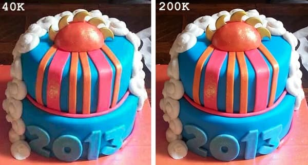

Kompresjon av bilder
Medierfiler tar store plass i den tekologiske verden. Video, lyd og bilder tar mye og vi må effektiv gjøre at ikke gjør det. Da kommer kompresjon inn i bilder. Kompresjon er at du gjør medie type mindre uten å ødelegge det. Vi har to type kompresjon. Tapsfri kompresjon og destruktiv kompresjon.
Tapsfri kompresjon
Tapsfri kompresjon reduserer mengden data ved å gjøre bildepunktene mer komprimerte. Vanligvis står bildepunktene i riktig rekkefølge med hver fargeverdi oppført. For eksempel: (255, 255, 255), (255, 255, 255), (140, 98, 57), (140, 98, 57), (140, 98, 57), (140, 98, 57), (255, 255, 255), (255, 255, 255). Her representerer (255, 255, 255) hvit, og (140, 98, 57) representerer brun. Tapsfri kompresjon gjenkjenner når flere bildepunkter har samme farge og skriver dem om. Her er det for eksempel fire brune bildepunkter etter hverandre, som kan omskrives til 4, (140, 98, 57). Det samme kan også gjelde for tallene: Hvis hvit har samme verdi tre ganger, komprimeres det til (3, 255). På denne måten tar mediefiler opptil en tredjedel mindre plass enn tidligere, og vi kan gjenopprette bildene med nesten 100 % nøyaktighet. Denne metoden kalles RLE (Run-Length Encoding).
På bildet kan du se forskjell mellom et ukomprimert bilde og et tapsfri kompresjon bilde.
Destruktiv kompresjon
Tapsfri kompresjon fungerer bra når det er enkle og mange av de samme bildepunktene etter hverandre. Denne typen kompresjon fungerer derimot dårlig for bilder, fordi bilder ofte inneholder mange detaljer som gjør bildepunktene varierte. I stedet bruker vi destruktiv kompresjon. Destruktiv kompresjon fører til noe tap av informasjon, men det bevarer nok til at bildet fortsatt kan gjenkjennes. Man kan ofte se forskjell på et komprimert og et ukomprimert bilde, der det komprimerte bildet vil være mindre tydelig, nesten som om pikslene er blitt større. Denne metoden reduserer både lagringsplassen som kreves og bildekvaliteten.

Dette er et bilde av katt som destruktiv kompresjon har blitt brukt på.